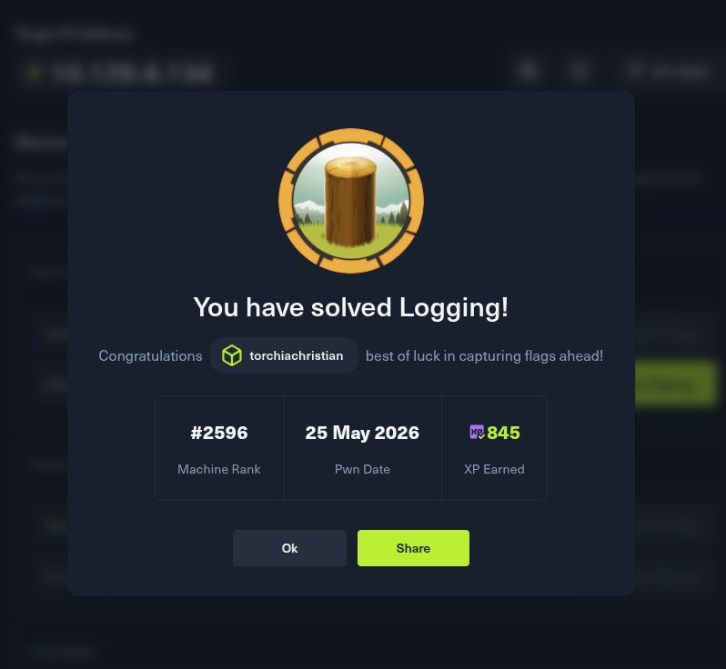
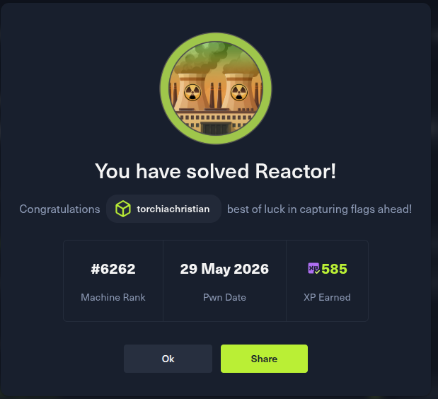

Writeup di macchine HackTheBox. Ogni entry documenta la catena di attacco completa — enumerazione, exploitation, privilege escalation.
HackTheBox machine writeups. Each entry documents the full attack chain — enumeration, exploitation, privilege escalation.
Macchina Active Directory. Le credenziali iniziali di wallace.everette sono fornite dalla piattaforma.
Catena: SMB log analysis → password recovery → Shadow Credentials → WinRM gMSA → DLL hijacking → Credential Vault dump → Administrator.
## Fase 1 — Ricognizione
Port scan completo con nmap. Porte rilevanti: 53 (DNS), 88 (Kerberos), 139/445 (SMB), 389/636 (LDAP), 5985 (WinRM).
Dominio: logging.htb / DC: DC01.logging.htb
## Fase 2 — SMB e discovery credenziali
Share non standard "Logs" contenente log di sistema. Nel file IdentitySync_Trace_20260219.log
emerge una password in chiaro per svc_recovery (scaduta). Pattern anno → Em3rg3ncyPa$$2026.
getTGT.py conferma: ticket ottenuto.
## Fase 3 — BloodHound
svc_recovery ha GenericWrite su MSA_HEALTH$ (gMSA).
MSA_HEALTH$ è membro di Remote Management Users.
Gruppo IT ha Full Control su C:\Program Files\UpdateMonitor\bin\
## Fase 4 — Shadow Credentials
bloodyAD aggiunge Shadow Credentials su MSA_HEALTH$.
PKINIT instabile tra respawn (KDC_ERR_PADATA_TYPE_NOSUPP su alcune istanze).
Soluzione: l'hash NT del gMSA rimane valido tra respawn (rotazione ogni 30 giorni).
evil-winrm con hash → shell come msa_health$
## Fase 5-6 — DLL Hijacking
UpdateMonitor.exe carica settings_update.dll da un ZIP in ProgramData.
Sei tentativi falliti: architettura sbagliata, funzione non esportata, system() muta in sessione 0,
reverse shell bloccata dal firewall egress.
Vettore corretto: CredEnumerate() WinAPI per leggere il Credential Vault di jaylee.clifton.
## Fase 7 — Accesso finale
Credenziali di jaylee.clifton e Administrator recuperate dal vault.
psexec.py → shell SYSTEM. Flag recuperate.
Active Directory machine. Initial credentials for wallace.everette are provided by the platform.
Chain: SMB log analysis → password recovery → Shadow Credentials → WinRM gMSA → DLL hijacking → Credential Vault dump → Administrator.
## Phase 1 — Reconnaissance
Full nmap scan. Relevant ports: 53 (DNS), 88 (Kerberos), 139/445 (SMB), 389/636 (LDAP), 5985 (WinRM).
Domain: logging.htb / DC: DC01.logging.htb
## Phase 2 — SMB and credential discovery
Non-standard share "Logs" containing system logs. IdentitySync_Trace_20260219.log
reveals a cleartext password for svc_recovery (expired). Year pattern → Em3rg3ncyPa$$2026.
getTGT.py confirms: ticket obtained.
## Phase 3 — BloodHound
svc_recovery has GenericWrite on MSA_HEALTH$ (gMSA).
MSA_HEALTH$ is member of Remote Management Users.
IT group has Full Control over C:\Program Files\UpdateMonitor\bin\
## Phase 4 — Shadow Credentials
bloodyAD adds Shadow Credentials to MSA_HEALTH$.
PKINIT unstable across respawns (KDC_ERR_PADATA_TYPE_NOSUPP on some instances).
Solution: gMSA NT hash stays valid across respawns (rotates every 30 days).
evil-winrm with hash → shell as msa_health$
## Phases 5-6 — DLL Hijacking
UpdateMonitor.exe loads settings_update.dll from a ZIP in ProgramData.
Six failed attempts: wrong architecture, missing export, system() mute in session 0,
reverse shell blocked by egress firewall.
Correct vector: CredEnumerate() WinAPI to read jaylee.clifton's Credential Vault.
## Phase 7 — Final access
jaylee.clifton and Administrator credentials recovered from vault.
psexec.py → SYSTEM shell. Flags retrieved.

Next.js 15.0.3 vulnerabile a CVE-2025-55182 (React2Shell), RCE unauthenticated.
Catena: RCE Next.js → SQLite dump → MD5 crack → SSH user → Node Inspector abuse → root.
## Fase 1 — Ricognizione
nmap: porta 22 (SSH) e 3000. Headers rivelano Next.js.
App: dashboard statica "ReactorWatch" con tre profili staff.
## Fase 2 — Identificazione vettore
/_next/image risponde 400 (non 404) → endpoint presente.
Versione 15.0.3 → CVE-2025-55182. Test con headers RSC → risposta 200. Vulnerabile.
## Fase 3 — RCE via React2Shell
PoC pubblico (jensnesten/React2Shell-PoC):
python3 main.py http://10.129.9.91:3000 'id'
→ uid=999(node)
Nota: output lungo va rediretto su file temporaneo (il parser RSC corrompe stdout binario).
## Fase 4 — SQLite dump e crack
strings su reactor.db → tabella users con due hash MD5.
Primo hash cracca su CrackStation → engineer / [password]
## Fase 5 — Privilege escalation
ps aux: processo Node.js root con --inspect=127.0.0.1:9229
Il Node Inspector espone un WebSocket che esegue codice JS arbitrario nel contesto root.
Handshake WebSocket manuale via Python + Chrome DevTools Protocol:
Runtime.evaluate → process.mainModule.require("child_process").execSync("cat /root/root.txt")
Nota: require() diretto non funziona nel contesto V8 nudo — usare process.mainModule.require().
Next.js 15.0.3 vulnerable to CVE-2025-55182 (React2Shell), unauthenticated RCE.
Chain: Next.js RCE → SQLite dump → MD5 crack → SSH user → Node Inspector abuse → root.
## Phase 1 — Reconnaissance
nmap: port 22 (SSH) and 3000. Headers reveal Next.js.
App: static dashboard "ReactorWatch" with three staff profiles.
## Phase 2 — Vector identification
/_next/image returns 400 (not 404) → endpoint exists.
Version 15.0.3 → CVE-2025-55182. Test with RSC headers → 200 response. Vulnerable.
## Phase 3 — RCE via React2Shell
Public PoC (jensnesten/React2Shell-PoC):
python3 main.py http://10.129.9.91:3000 'id'
→ uid=999(node)
Note: long output must be redirected to a temp file (RSC parser corrupts binary stdout).
## Phase 4 — SQLite dump and crack
strings on reactor.db → users table with two MD5 hashes.
First hash cracks on CrackStation → engineer / [password]
## Phase 5 — Privilege escalation
ps aux: root Node.js process with --inspect=127.0.0.1:9229
Node Inspector exposes a WebSocket that executes arbitrary JS in the root process context.
Manual WebSocket handshake via Python + Chrome DevTools Protocol:
Runtime.evaluate → process.mainModule.require("child_process").execSync("cat /root/root.txt")
Note: bare require() doesn't work in the raw V8 debugger context — use process.mainModule.require().
